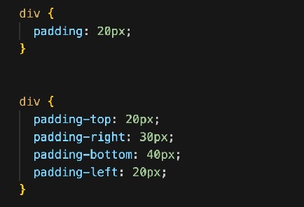

Technical Blog: CSS Concepts
1 July 2022
What is the difference between Margin, Border, and Padding?
CSS controls the layout and presentation of a HTML document. Each element in a HTML document can be thought of as a container or invisible rectangular-layered box. The different layers of the box consists of: margin, border, padding and content. You can see a representation of the CSS box model below (Source.):
- Content: The actual content of the box, for example text or images
- Padding: The immediate area around the content. The padding is transparent
- Border: A border that surrounds the padding and content
- Margin: An area outside the border. The margin is also transparent
Content
The content is the HTML element inside of the 'box', it can be an image, a paragraph, a web button or even empty space. When specifying height and width for the element, this only applies to the content. If padding or a border is added, this will add extra height and width to the box.
Padding
Padding is used to create a transparent space around an element's content and inside of any borders. The following properties can be used.
- padding
- padding-top
- padding-right
- padding-bottom
- padding-left
When only the property 'padding' is used and there is only one value, that value applies to all four sides.
You can also use the padding-top, padding-right, padding-bottom and/or padding-left properties to specify different values for the different sides. CSS examples below:

Border
A border can be placed around an element's content and padding. Many different properties can be used, the most common are:
- border-style
- border-width
- border-color
- border-radius
- border
Border-style alone has many different values: dotted, dashed, solid, etc. Border-width and border-color are self-explanatory, border-radius is used when you want a rounded border.
When only the property 'border' is used, it can be used as shorthand for the following properties: border-width, border-style (required) and border-color. In the CSS examples below, you can see two different ways of producing the same border:
Margin
A margin is used to create a transparent space around elements, outside of any borders. The following properties can be used.
- margin-top
- margin-right
- margin-bottom
- margin-left
- margin
You can use the margin-top, margin-right, margin-bottom and/or margin-left properties to specify different values for the different sides.
When only the property 'margin' is used, if there are four values listed they represent the following properties in order: margin-top, margin-right, margin-bottom and margin-left, otherwise if there is only one value then it applies to all four sides equally. CSS examples below:
When should you use Margin, Border or Padding?
It's really up to you, these properties are there as tools you can use to arrange the elements on the page as you wish. They can help the page look well-balanced, uncluttered and aesthetically pleasing.